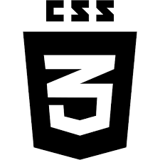
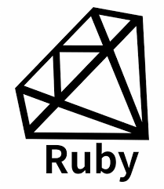
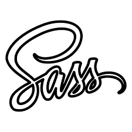
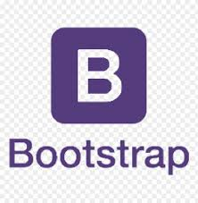
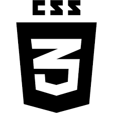
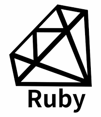
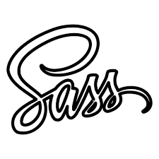
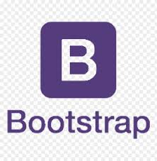

Jessica Sole
I am a former Pastry Chef turned passionate Web Developer. I’m currently looking to enhance my web development skills and prepare for a career change into the web development industry. I have been working in the hospitality industry as a Chef, in this capacity I have interfaced frequently with clients, produced quality products in the time frame given and worked in teams in the capacity of leader and follower. This has instilled many multidimensional skills that I believe to be transferable to any industry. From the moment I began my coding journey I have been drivien to improve. I have always enjoyed the creative aspect of being a chef and I soon realised that this was no different when coding, I was hooked. The pre-planning and preparation, the building of the product and maintaining a deliverable scope all felt familiar to me. From then I knew that I wanted a career in Web Development.
 






